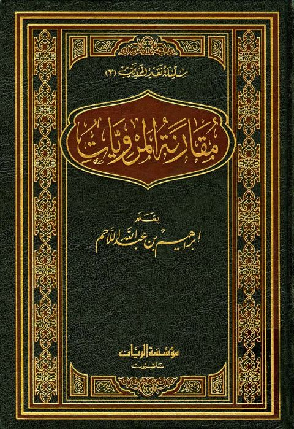

مقارنة المرويات
Authors: إبراهيم بن عبد الله اللاحم
Publishers: مؤسسة الريان
Download Downloads need an internet connection.
- Published
- 1433هـ 2012م
- Country
- بيروت، لبنان
- Edition
- 1
- Volumes
- 2
- Pages
- 1126
- Type
- كتاب
- Category
- الحديث وعلومه
- Subcategory
- بحوث حديثية
Description
**▫️ العنوان: مقارنة المرويات** ▪️ المؤلف: #إبراهيم_بن_عبد_الله_اللاحم ▫️ الناشر: #مؤسسة_الريان ▪️ تاريخ النشر: 1433هـ 2012م ▫️ بلد النشر: بيروت، #لبنان ▪️ الطبعة: 1 ▫️ عدد الأجزاء: 2 ▪️ الصفحات: 1126 ▫️ نوع الوعاء: #كتاب ▪️ التصنيف الرئيسي: #الحديث_وعلومه ▫️ التصنيف الفرعي: #بحوث_حديثية ۪